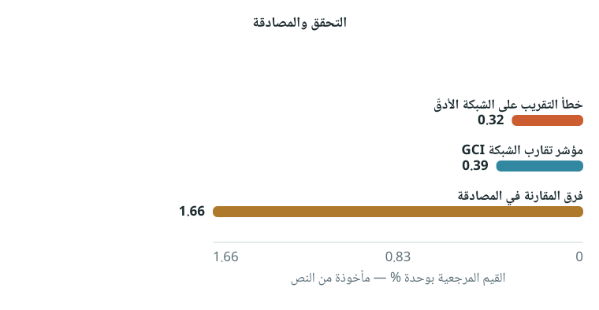

التحقق والمصادقة
Verification and Validation
التحقق يسأل هل تُحل المعادلات حلًّا صحيحًا ويُقاس بخطأ عددي، والمصادقة تسأل هل تمثّل المعادلات الواقع ويُقاس بفرق عن القياس مقابل لا يقينه.
التحقق والمصادقة ممارستان مختلفتان لضبط الثقة في نتائج المحاكاة. التحقق يخصّ الرياضيات: هل حلّ الكود المعادلات الحاكمة حلًّا صحيحًا؟ ويُقاس بخطأ عددي، إما بمقارنة حل تحليلي أو بترقيق الشبكة واستخراج رتبة التقارب. والمصادقة تخصّ الفيزياء: هل تمثّل المعادلات الحاكمة والمدخلات الظاهرة تمثيلًا كافيًا؟ وتُقاس بفرق بين نتيجة النموذج وقياس تجريبي، مقارنًا بعدم يقين القياس. لا يُغني أحدهما عن الآخر: حل دقيق لمعادلات خاطئة يبقى خطأً، ونموذج مطابق للقياس بحل رديء يخفي خطأً لم يُقَس. ويُفصل عن الاثنين ضبط المعاملات (calibration) الذي يعدّل الثوابت لتناسب البيانات، وهو مصدر خطر إن عُدّ دليلًا على صحة النموذج: البيانات التي ضُبط بها لا تصلح للحكم عليه.
كيف تعمل الظاهرة؟
التحقق يبدأ بترقيق الشبكة: يُحسب الحل على ثلاث شبكات بنسبة ترقيق r، وتُستخرج رتبة التقارب المُلاحَظة p من تناسب الخطأ مع h^p، فيُدلّ ذلك على أن الحل في النطاق التقاربي وأن التقريب يتقارب فعلًا. ثم يُستخرج حل مرشَّح بالتمديد الريتشاردسوني، ويُقدَّر عدم يقين الخطأ العددي بمعامل سلامة. أما المصادقة فتقارن قيمة النموذج S بقيمة القياس D وتعطي فرق المقارنة E = S − D، وتقارنه بعدم يقين مركّب يجمع عدم يقين القياس وعدم يقين المدخلات وعدم يقين شكل النموذج. تمرّ المصادقة إذا كان |E| داخل حدّ عدم اليقين، وترسب إذا خرج عنه، ويُسجَّل المدى الذي صُودق عليه لا أكثر.
العلاقة بالأرقام
بثلاث شبكات r = 2 ونتائج 0.9760 و0.9580 و0.9520 من الأخشن إلى الأدقّ: p = ln[(0.9760 − 0.9580)/(0.9580 − 0.9520)] ÷ ln 2 = ln(3) ÷ 0.6931 = 1.585. الحل المرشَّح = 0.9520 + (0.9520 − 0.9580) ÷ (2^1.585 − 1) = 0.9520 − 0.0030 = 0.9490. خطأ التقريب على الشبكة الأدقّ = |0.9520 − 0.9490| ÷ 0.9490 = 0.32%. ومؤشر تقارب الشبكة GCI = 1.25 × (0.0060 ÷ 0.9520) ÷ (2^1.585 − 1) = 0.39%. وللمصادقة: قياس 0.9650 بعدم يقين 3% (±0.029)؛ فرق المقارنة = 0.9490 − 0.9650 = -0.0160 أي 1.66% من القياس، وهو داخل 3% فالنموذج مصادَق على هذا المدى.
مفاهيم متقاربة
التحقق والمصادقة يفترقان في المرجع: مرجع الأول حل أدقّ أو حل تحليلي، ومرجع الثاني تجربة. ولهذا لا تُقبل مقارنة كود بكود مصادقةً، ولا تُقبل مقارنة نموذج بقياس ضُبط عليه تحققًا. والخطأ العددي في التحقق يُقاس بترتيب التقارب لا بنسبة مئوية اعتباطية، فالرقم بلا رتبة تقارب مُلاحَظة لا يقول شيئًا. وفي المصادقة يُقارن الفرق بعدم اليقين لا بالصفر: نموذج يطابق القياس تمامًا داخل تجربة خطؤها 10% لم يُختبر اختبارًا حاسمًا.
حدود التطبيق
طريقة رتبة التقارب تفترض حلًّا أملس وشبكة في النطاق التقاربي؛ عند وجود صدمة أو انقطاع أو تغيّر طور لا تتحقق الرتبة وقد تخرج p غير منتظمة فلا تصلح الطريقة. وتقيس الطريقة الخطأ العددي لمخرج واحد، فلا تُعمَّم على كل مخرجات النموذج. والمصادقة محدودة بمدى التجربة: لا تُعمَّم على ظرف لم يُقس، والمدى المصادَق عليه جزء من النتيجة لا حاشية. ولا يكشف المنهج خطأً في شكل المعادلات إذا كان القياس داخل نطاق ضبط سابق، ولا يُقاس عدم يقين شكل النموذج إلا بمقارنة نماذج بديلة، وهو خارج حساب الفرق البسيط.

| الكمية | القيمة | المصدر |
|---|---|---|
| الرتبة المُلاحَظة للتقارب p | 1.585 — | [1] |
| خطأ التقريب على الشبكة الأدقّ | 0.32 % | [1] |
| مؤشر تقارب الشبكة GCI | 0.39 % | [2] |
| فرق المقارنة في المصادقة | 1.66 % | [2] |
المصادر
- 1 Fundamentals of Verification and Validation (Roache) — Hermosa Publishers (2009). openlibrary.org/api/books?bibkeys=ISBN:9780913478127&format=json&jscmd=data · اطُّلع عليه 2026-11-26
- 2 ANSI/ASME V&V 20-2009 — Standard for Verification and Validation in Computational Fluid Dynamics and Heat Transfer — American Society of Mechanical Engineers (2009). · اطُّلع عليه 2026-11-26
استشهد بهذا المصطلح
الصيغتان مبنيتان من بيانات الصفحة نفسها: العنوان والتاريخ ورابط النسخة المنشورة.
التحقق والمصادقة — Verification and Validation. (2026). ديوان المعرفة — انفراد. https://infiradev.com/diwan/terms/term-verification-validation.html
@misc{term-verification-validation2026,
title = {التحقق والمصادقة},
titleaddon = {Verification and Validation},
howpublished = {{ديوان المعرفة — انفراد} — مرجع علمي عربي},
year = {2026},
url = {https://infiradev.com/diwan/terms/term-verification-validation.html},
urldate = {2026-11-26},
note = {مراجعة علمية: hermes — مراجعة آلية بالتكليف 2026-11-26}
}
راجعه: hermes — مراجعة آلية بالتكليف 2026-11-26 · 2026-11-26 · آخر تحديث 2026-11-26